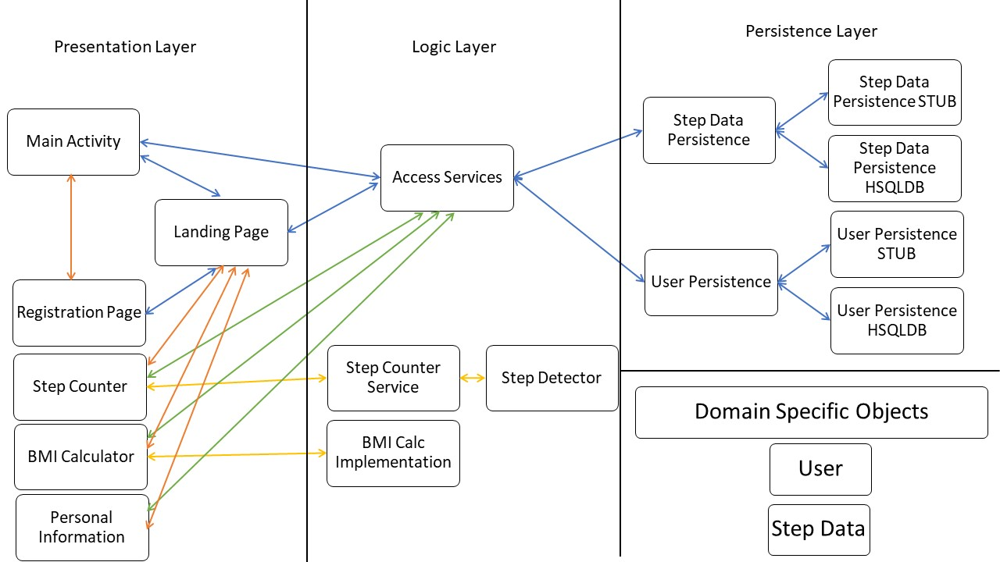

Fitness Companion
Stay fit with your companion!
Our Fitness Companion Video is:
Overview
The fitness companion app will be used to establish and track personal fitness goals and progress as well as choosing fitness and meal plans to follow. Tools for tracking and calculating various fitness related statistics will be provided to users and all collected statistics will be viewable in simple text or a more visual graph formats. This system is designed to be used by anyone who exercises regularly and would like to track their goals and progress. It will feature tools such as a step counter to automatically track your steps as well as options to create your own goals to be tracked manually. The fitness companion will also have options to track and calculate your calories. A BMI (body mass index) calculator will also be built into the app for people to easily calculate their current BMI and track how their BMI changes over time. The option to manually track your sleep will also be available to users. The fitness companion will also offer features to accommodate people that are new to exercising and dieting. As well as a number of beginner friendly exercise programs to choose from, the app will also have a section for meal plans that are easy to follow and have various nutritional information such as calories and macro nutrient compositions listed. This system is envisioned as an android application but could be easily expanded to ios. A web companion for more detailed statistical analysis and various other features such as leaderboards would also be possible in the future. Friendly competitions are also an envisioned feature that could be added to the fitness companion in the future. Users would be able to add their friends to a list and invite them to competitions. This would allow users to compete against their friends in order to be the first to reach or get as close as possible to a specific goal within a given time frame. This system greatly improves on traditional fitness tracking done with pen and paper, but also improves on other fitness apps by bringing together features that are often separated into multiple apps. Being able to track your progress, browse through and pick exercise and meal plans all through one app is much more efficient than having to download multiple apps and switch between them for specific features. This system is intended for a group of individuals who want to stay fit and want to follow a healthy diet by reviewing their calorie intake, daily steps, BMI, choosing their diet plan and individuals who want their meal plans customized which leads them towards an active and healthy lifestyle. The success of the fitness companion will be based on ratings from the google play store. An overall rating above 3.5 stars will be considered a success. We will also judge the success of the application on user surveys. We will consider the app a success if at least 75 percent of users prefer our app over fitness apps shipped with the phone or with apps that the user was previously using for tracking their fitness and health.
Intended Users
This system is intended for a group of individuals who want to stay fit and want to follow a healthy diet by reviewing their calorie intake, daily steps, BMI, choosing their diet plan and individuals who want their meal plans customized which leads them towards an active and healthy lifestyle.
Functionality
The Features for the fitness companion includes are:
User Login`: Once users register themselves into the system they can access the system by using the User Login feature of the application. They just need to type in the email that they registered with and the password they entered at the time of registration. User Registration: This is the best way for a new user to access the system. They need to click on register and this feature will guide them along the entire process of registration. Once registered successfully they can take advantage of the features like Step Counter, BMI Calculator and Update Personal Information. Step Counter: This feature allows users to track their daily steps just with a single click. This system shows the user their steps for the previous three days and keeps them aware of their daily steps. BMI calculator: This feature educates users about BMI and helps them to measure it based on their current credentials as well as shows their previous BMI based on their past credentials. Updating personal information: This feature allows users to update their personal information like changing weight, age, height etc. Also, it allows users to correct a typo in their names in case someone mistypes it making it a significant feature of the system.
Our Contributers
Parth Patelis a third-year computer science student who is highly passionate about programming in Java. With no experience in android development, this individual mastered the skill of android development using the android studio as a primary tool. Here are some of the technical skills he gained during the development process: UI development, setting up a database for the backend and implementing logical functions for interactions between UI and database. Mthandazo Siziba is a third-year computer science student who is highly passionate about programming in Java. He has prior experience in android development and is great at testing code. With a lot of prior experience, he polished his skill of structuring code based on SOLID principles.
Sales Pitch
In these unusual times, with everyone staying in their homes, it is easy for someone to disrupt their schedule in their comfort-zone which might lead to an unhealthy lifestyle. And considering the above situation, it becomes easy for individuals to improve or maintain a healthy lifestyle if someone is there to guide them with their daily routine. And this is where we recommend our application fitness companion which guides its user to follow a healthy diet, to keep track of calorie intakes and calorie burnings, to calculate their BMI, to keep track of their steps. Isn't that great? Download the app to choose a healthy life!
Postmortem
Iteration 2 Retrospective
* only one feature was completed for the iteration 2.
* members got hit by a bus.
* time management was poor
Overall Architecture of the System
our architecture is a three tier architecture that comprises of three main layers: presentation layer: resposible for implementing UI in the application. logic layer: responsible for any of the data processing and manipulation required by the application and providing interactive service between the presentation and persistence layer. persistence layer: responsible for storing data permanently into the database for the application. 
The best thing about our project was dividing the architecture into three tiers, implementation of classes into these layers and restructuring the code based on SOLID principles, implementation of the HSQLDB database, fixing code smells and build errors and achieving more than our commitment in iteration 3 which increased the velocity of our team. Some of our team members were hit by a bus during the agile process and our commitment was more compared to the actual implementation of features. We would have implemented one feature per individual in each iteration and would have committed to fewer features while maintaining the constant velocity of the group. We would have chosen the approach of vertical depth as compared to horizontal like we would have developed few features in more detail than a lot of them. We would have written tests earlier while developing the system. The project has roughly 50 methods and 20 classes of which there are two interfaces for the persistence layer. Out of these 13-14 methods are used for accessing and implementing a database, the rest 10-12 methods are used for logic layer implementation and the rest of the methods are helper methods that are private in classes, getters and setters for service class and Domain-specific objects. We have recorded that the majority of time was spent in implementing the database for our system and minimum time was spent on implementing a feature that updates the personal information of the user. To our surprise, we didn't expect to complete three features in our third iteration but after implementing HSQLDB in the third iteration we paced up like never before and complemented two features within just two days. There is no design smells that we know of and we are not aware of any bug in our application. We think that our best design decision was to refactor code into the layers by following SOLID principles and we believe that this helped us in simplifying design. Yes, the BMI calculator and Personal Information Update feature worked better than any other features than we expected. Our project is not using any additional technologies other than the ones expected in the course. We believe that the project has not changed from the initial vision but as some of our group members got hit by a bus we limited the scope of our application by implementing fewer features than planned originally and hope that we implement them in the future versions of the application. We learn that when working in teams every individual's participation and contribution is significant in the development process. Hence, we would start creating an environment that respects every individual and feels welcoming and enthusiastic. We will change our approach by meeting our goals on time and follow deadlines to ensure the constant velocity of the team. We will continue to design a system that will try to follow all SOLID principles and has an n-tier architecture. To conclude, we would like to share that it was a great software development opportunity and was a very successful learning experience for our team.
Velocity Graph

The velocity graph of our team depicts significant information about our group, it indicates that we are learning and we are trying to recover from our past mistakes. It shows that we are implementing more than we planned but in the best way possible. In the first two iterations, we lost some of our members as they were hit by a bus and our team was a bit unstable. Moreover, our commitment was more than our actual work, and also we had fewer participants to complete the planned tasks, this was a significant reason why we were not able to meet our goals. But, in the third iteration, we implemented more features than we initially expected, and in a way, we tried our best to balance the graph.